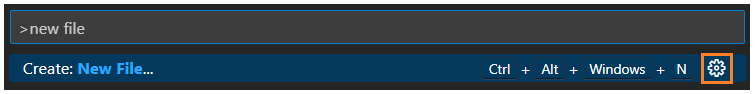

1. Basics
Settings
Open with 'Ctrl+,'. There are a 'User' tab (global settings) and a 'Workspace' one (current folder settings overwriting the global).
Editable also in settings.json file (basic suggested change: add rulers and format on save).
Search bar: write the setting name, use filter with '@' symbol (e.g.: '@modified') or find extensions/language related settings.
Extensions
Open Extensions tab with 'Ctrl+Shift+X'. Here we can see the installed and the recommended extensions. When you will use specific languages or script VS Code will suggest some useful extensions.
Useful exstensions are: code formatters, autocomplete-extensions and lint-type extensions.
Start a project
File tab (top-left corner) and Open Folder.
This open Explorer (also with 'Ctrl+Shift+E'), where
| naming 'OldPath\file.ext' | create a file in an existing folder |
| or naming 'NewPath\file.ext' | create a file and new folders |
2. Editing Tricks
Cursor
| Alt+left click | add cursor in that point |
| Ctrl+Alt+↑/↓ | add it above/below |
| Ctrl+Shift+L | select all occurrences of current selection |
| Ctrl+D | select next occurrence of current selection |
| Ctrl+U | undo last cursor operation |
View
| Alt | fast scrolling |
| Alt+left click (on a file) Ctrl+Enter (in Explorer or Quick Open) |
open the file to the side |
| Ctrl+1/2/... | switch editor tab |
Lines
| Shift+Alt+↑/↓ | copy lines up/down |
| Alt+↑/↓ | move lines up/down |
| Ctrl+G | go to lines number *input* |
| Ctrl+L | select current line |
| Shift+Alt+←/→ | shrink/expand selection |
| Shift+Alt+drag | columns (or box) selection |
Extras
| Ctrl+/ | toggle comment on selected lines |
| Ctrl+[/] | code folding |
| Ctrl+Space | trigger Intellisense (autocompletion) or info on the method/function used |
3. Useful features
Navigation
| Ctrl+P if then also → |
go to file *input* quick open |
| Ctrl+O | go to symbol *input* |
Search and replace
| Ctrl+F/Ctrl+H if also +Shift |
search/replace in the file search/replace in the entire project |
Run files
With some languages if you have the required extensions when needed, you can use the 'Run and Debug' tab to run your scripts and solve the errors occuring.
Terminal
Open it with 'Ctrl+`' (` is Backtick). We can click on the right icons to create multiple terminal instances, split the 'same terminal', choose the terminal and delete some, change name and color to terminals. Near the terminal we find also the debug console and windows for problems and outputs.
4. Shortcuts
Here there's the list of VS Code shortcuts: Shortcuts Sheet .
Some useful ones not mentioned before:
- COMMAND PALETTE: 'Ctrl+Shift+P', used to search commands (also extension related) and their shortcut.
- SAVE: 'Ctrl+S' to save the current file.
- ZOOM: 'Ctrl+ =/-' .
To change default shortcuts:
-
Search for the command in the Command Palette, then click on the gear icon near its shortcut
and modify it.
 - Type in the Command Palette 'open keyboard shortcut' to get to the table or 'open keyboard shortcut (JSON)' to override by coding in the file.